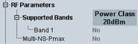

RF UE Capabilities
This section indicates the supported operating bands and other RF capabilities.

The UE supports all listed operating bands.
Column "Power Class 20 dBm" indicates for each supported band, whether the UE supports a power class with 20 dBm in that band. "No" means that the UE supports a power class with 23 dBm.
For NB-IoT power classes, see 3GPP TS 36.101, section 6.2.2F.
Remote command:Defines whether the UE supports the handling of multiple "NS-Pmax" values. The multiple values are broadcasted as "NS-PmaxList-NB".
Remote command: